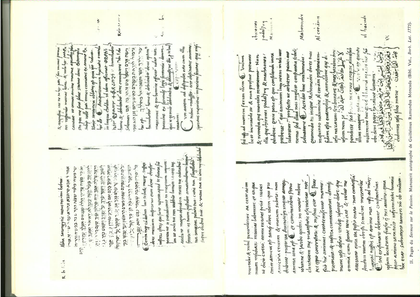
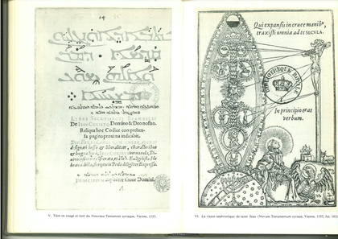
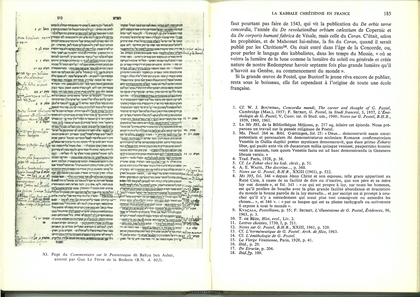
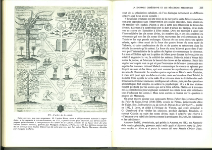

Dunod, 1964 — OCR'd and chunked for exploration
Front matter (series page, title page) plus the opening of Secret's Avant-propos. Secret defines "kabbale" against the degraded popular sense of "cabale," surveys the prior scholarship (Scholem, Vajda, Franck, Blau, Vulliaud), and frames his book as a panorama of the "golden age" of Christian Kabbalah from the late Middle Ages to the mid-17th century. He sketches the rise of Hebrew studies in the age of the Polyglots and trilingual colleges, the history of Jewish Kabbalah (Sefer Yetzirah, Bahir, Zohar, Abulafia), and introduces his central figures: Pico della Mirandola, Reuchlin, and especially Guillaume Postel.
The close of the Avant-propos (Secret's chapter plan and methodology), the Table des matières, the Table des planches, a transcription table for the Hebrew alphabet with numerical values, then the opening of Chapter I, "The 'Ancestors' of Christian Kabbalah." Secret introduces Pico della Mirandola, his 900 theses and Apologia, and the claim that Pico was the first to name "kabbale" in Latin. He lays out Pico's argument — via Esdras, Origen, Hilary, and Paul — that alongside the written Law God gave Moses a secret oral tradition transmitted to seventy sages.
Continuation of Chapter I and the start of Chapter II ("The Beginnings of Kabbalah in Spain"). Secret follows Pico's argument that Ezra had the seventy secret books written down, and the patristic/Hieronymian authorities (Jerome, Eusebius, Irenaeus) later Christian Kabbalists invoked for the mystical meaning of the Hebrew alphabet, gematria, and letter-permutation (the Ath-Bash cipher). He then opens the Spanish chapter with the medieval apologetic tradition — Petrus Alfonsi, Joachim of Fiore, Dante, and Ramon Martí's Pugio Fidei — reading the Tetragrammaton as a figure of the Trinity.
Chapter II continues, tracing the influence and themes of Ramon Martí's Pugio Fidei and the wider Spanish apologetic tradition. Secret covers the textual afterlife of the Pugio (Porchetus, Galatino's alleged plagiarism, Alfonso de Zamora), and its recurrent themes: the "prophecy of Elijah" (6,000-year world scheme), the Sem ha-meforash legend of Jesus's miracles, the dialectic of rigor and mercy (YHWH/Elohim), and the 12- and 42-letter divine names. He then turns to Abulafia's letter-combination techniques (gematria, notarikon, temurah), Abner of Burgos as the first to use the word "kabbale," and the theme of metempsychosis as read by Ficin, Paul de Burgos, and others.
Chapter II continues through the 15th-century Spanish disputational milieu (the Dispute of Tortosa) and culminates in Pico's celebrated kabbalistic exegesis of the opening word of Genesis. Secret surveys converts and apologists — Jerónimo de Santa Fe, Pedro de la Caballería (the first Christian to cite the Zohar by name), Alfonso de la Torre, Pérez de Valencia, Petrus Nigri, Pietro Bruto — who use gematria and the divine names to find the Trinity and Messiah in Hebrew letters. He then gives the long French translation (by Nicolas Le Fèvre de la Boderie) of Pico's Heptaplus exegesis decomposing "Bereshit" into twelve words, and Lorenzo da Brindisi's expansion of it into thirty-three.

Mostly the dense endnotes for Chapter II (bibliographic apparatus citing Secret's own articles, Scholem, the Pugio Fidei, etc.), followed by the opening of Chapter III, "Pico della Mirandola and the Italian Milieu of Christian Kabbalah." Secret argues that the two figures who actually prepared Pico's Kabbalah were converts: Flavius Mithridates (Guglielmo Raimondo Moncada / Guillaume de Sicile) and Paul de Heredia. He reconstructs Mithridates' biography — his 1481 Passion sermon before Sixtus IV, his flight from Rome, his teaching of Reuchlin in Germany, and his 1486 meeting with Pico, for whom he translated kabbalistic manuscripts.
Mithridates' role as Pico's Hebrew and Kabbalistic instructor, his complex character revealed through marginal glosses attacking Pico, and Paul of Heredia's foundational Christian Kabbalah works emerge as sources for Renaissance syncretism.
Pico's systematic organization of Kabbalistic conclusions reveals his Renaissance synthesis of Hebraic mysticism with Christian theology, creating the foundational intellectual structure that shaped all subsequent Christian Kabbalah.
Pico's scandal and retreat, his continued Kabbalistic study and disciples, his influence through Clément Abraham's pedagogical legacy, and the extraordinary fortune of his posthumously published syncretic works among Renaissance Kabbalists.
Reuchlin's Italian education in Hebrew and Kabbalah, his dialogical *De Verbo mirifico* establishing the power of divine names through Hebrew language and Kabbalistic nomenclature.
Reuchlin's pneumatic Christology grounded in divine names, the mystical orthography of Jesus's name as Pentagrammaton, Thomas Anshelm's semiotics of the Tübingen printer's mark, and the exponential growth of Christian Kabbalistic bibliography through Reuchlin's foundational catalogues.
The proliferation of kabbalistic bibliographies from Reuchlin through Masius and Gesner, the material history of Zohar publication and Hebrew printing, the triadic dialogue structure of De arte cabalistica, and Simon ben Eliezer's systematic exposition of the ten sephiroth as the mechanism of deification.
Reuchlin's doctrine of the fifty gates of understanding, the thirty-two paths of wisdom, and the ten sephiroth as keys to divine knowledge and Christian mystical theology.
Reuchlin concludes his kabbalistic work with detailed exposition of letter permutation techniques, the seventy-two divine names, and Christian theological integration while facing censorship.
Transition to Italian Christian kabbalah through eccentric hermetic figures (Lazzarelli, Mercurio), Ficino's engagement with Hebrew sources, and Léon Hebreu's synthesis of Platonic and kabbalistic learning.
Italian kabbalists Augustinus Ricius and Paul Ricius systematize emanationist theology and letter-mysticism while defending kabbalah against Catholic scholasticism.
Paul Ricius emerges as central figure in Christian kabbalah, defending the discipline against scholasticism while synthesizing Neoplatonic theology and Jewish mystical texts.
Paul Ricius's mature kabbalistic theology synthesizes Hebrew hermeneutics with Christian dogma and contemplative practice while navigating ecclesiastical suspicion.
Ricius's cosmological poem mapping the Sephiroth to planetary spheres becomes foundational to Renaissance Christian Kabbalah, spurring both fervent adaptation and sharp theological refutation.
Augustin Giustiniani pioneers critical biblical scholarship through the polyglot psalter, embedding Zoharic texts in scholia and establishing Hebrew studies as a Christian intellectual virtue.
Cardinal Gilles of Viterbo emerges as Renaissance Kabbalah's most erudite patron, commissioning translations of Hebraic texts and synthesizing Sephirotic wisdom with Neoplatonic and prophetic thought.
Gilles of Viterbo's Sephirotic alphabet and mystical history reframe Scripture through Kabbalistic number-symbolism, positioning Charles V as an end-times deliverer and the tenth century as apocalyptic fulfillment.

Gilles' Scechinah reveals Kabbalah as the hermeneutic key to continuous Scripture; illustrated with engraved portrait of Galatin and symbolic title-pages mapping Sephirotic vision onto Christ's crucifixion.
Widmanstetter and Seripando inherit Gilles' Kabbalistic tradition, balancing critical suspicion of Jewish mysticism with reverent textual scholarship on the Zohar, Sephiroth, and symbolic theology.
Giorgio interprets the Tabernacle as a mystical cosmology mirroring the divine architecture of the Sephiroth and the microcosm of humanity, grounding this in the Zohar and Bahya ben Asher.
Giorgio and contemporaries recover Christ's name hidden within the Tetragrammaton through gematria; Renaissance scholars dispute orthography and mystical implications while papal circles express curiosity about kabbalah.
Secret refutes the claim that the Reformation suppressed Christian kabbalah by documenting Catholic friars like Pellican and Protestant humanists who quietly cultivated kabbalistic learning alongside exegetical rigor.
French humanists and reform circles discovered Christian Kabbalah through Reuchlin and Italian sources, with the royal court and erudite clergy embracing mystical interpretations of scripture.
Agrippa's mystical philosophy and Trithème's crypto-scholarly networks disseminated Christian Kabbalah throughout elite circles while facing mounting accusations of charlatanism and heresy.
French Hebraists and kabbalists of the mid-sixteenth century—from royal scholars to Rabelais—consolidated Christian Kabbalah as a legitimate humanist discipline while critics explicitly targeted it as Jewish superstition.
Secret closes his survey of early French Christian Kabbalah with minor grammarians—Chéradame, Joannes Vallensis—who recycle stock kabbalistic themes (the closed Mem, the alphabet per St. Jerome, numerical equivalences of Iesu and Miriam), noting France had not yet produced a kabbalist of the stature of Pico, Galatino, or Reuchlin. He then opens his major chapter on Guillaume Postel (1510–1581), tracing the poor Norman's rise to mastery of Hebrew, Arabic, and the trilingual college, his religious crisis, his rejection by Loyola, and his arrival in Venice where he obtains a Zohar and meets the prophetic Mère Jeanne, the "Venetian Virgin" who becomes his spiritual mother and key to the Zohar's mysteries.
Secret reconstructs Postel's Venetian and later years through his prodigious "tachygraphic" output—his Latin translation of the Zohar (recovered by Secret at Göttingen), translations of the Bahir and Recanati, and apocalyptic placards—culminating in his 1552 "Immutation," when he claimed to become Caïn restored, son of the New Eve, immortal in substance. He lays out Postel's millenarian system of four ages climaxing in the Concorde, the doctrine of the Messiah's spirit and Gilgul (transmigration), and the conviction that "omnia in omnibus." The chunk closes by showing how Postel's Zohar is wholly "postellien": he attributes the work to Symeon the Just (the Simeon of Luke who received the infant Christ), reading the Lek Leka section as a veiled prophecy of Christ at Lud/Veled.
Postel's mystical exegesis of the Zohar—encoded in works like the Candelabrum and his Zohar commentary—fuses Jewish esotericism with Christian eschatology, Gallic genealogy, and his personal mythology, constructing an elaborate symbolic system in which France, the Zohar, Mother Jeanne, and his own illumined consciousness converge as instruments of universal restoration.

This chunk contains engraved portrait illustrations of Guy Le Fèvre de la Boderie and annotated manuscript pages, alongside a concluding note contextualizing Postel's 1543 publication as marking the entry into an age of concord where Christ's promised light would shine seventy times more brightly than at creation, establishing his followers as the heirs to his mystical mission.
Postel's disciples—including Jean Boulaese, Vincent Cossart, Adrien Le Tartrier, and most notably the brothers Guy and Nicolas Le Fèvre de la Boderie—translate, annotate, and amplify his kabbalistic doctrines while maintaining positions as royal scholars and editors of the Antwerp Polyglot Bible, extending Postel's mystical vision into mainstream Renaissance scholarship.
Guy Le Fèvre de la Boderie synthesizes Postelian mysticism with Neoplatonic erudition in his *Encyclopedie*, *Galliade*, and poetic works, demonstrating how kabbalistic interpretation of the Tabernacle, Sephiroth, and Hebrew letters creates a comprehensive vision of universal concord rooted in sacred language; Nicolas's systematic exposition of the thirty-two paths of wisdom establishes the fullest French hermeneutical framework for Christian Kabbalah, while contemporary scholars like Genebrard increasingly critique the movement's excesses.
Génébrard critiques flawed kabbalistic methods while simultaneously drawing on Zohar and cabalist sources to support Christian doctrines like purgatory and the Eucharist; Vigenère articulates a comprehensive Christian kabbalism that unites theology, astrology, and alchemy through universal analogies and symbolic interpretation.
Mercier and his Parisian Hebrew circle display mixed attitudes toward kabbalah—initially embracing it through gematria and symbolism, later cooling toward its speculative excesses; across France and beyond, scholars like Du Plessis-Mornay and Bodin engage, critique, or distance themselves from Christian kabbalism with varying degrees of rigor.
Spain's initial receptivity to Christian kabbalah, embodied in figures like Alfonso de Zamora and Luis de Carvajal, gradually yields to systematic opposition from theologians like Pedro Ciruelo and Miguel de Medina, who condemn kabbalah as recent Jewish invention, magical superstition, and breach of scriptural authority.
Spain's ecclesiastical establishment continues to produce both defenders and critics of Christian kabbalah; Portuguese figures and Jesuits selectively employ kabbalistic exegesis for devotional and theological ends, while authorities like Ciruelo's intellectual heirs mount sustained attacks on magical and superstitious applications.
English Christian kabbalah develops slowly, initially through early figures like Colet and Fisher, then gains momentum with scholars like Dee, Ainsworth, and Alabaster, who systematize kabbalistic exegesis alongside sustained attacks from Protestant reformers and rationalists skeptical of mystical interpretation.
Late sixteenth and early seventeenth-century English and international scholarship witnesses expansive Christian kabbalistic production, from Hepburn's rare Hebraic synthesis and Kircher's encyclopedic adoption to Bacon's skepticism and Fludd's synthesis, while the broader intellectual landscape consolidates kabbalah's place in European erudition despite sustained theological objections.
Four scholars evaluate Christian Kabbalah's trajectory from Pico's sixteenth-century vindication through Counter-Reformation condemnation, framing it as both apologetic tool and contested theological tradition.
Three converts—Ludovicus Carret, Rafaele Aquilino, and Fabiano Fioghi—weaponized kabbalah as apologetic tool, using mystical exegesis to argue Christian doctrines were embedded in Jewish tradition pre-Messianically.
German-speaking converts deployed Kabbalah more skeptically; critical voices emerged alongside apologists, and forged texts revealed both credulity and emerging textual skepticism about Zoharic antiquity.
Catholic authorities from Leo X through Clement VIII tolerated Christian Kabbalah when distinguished from Jewish superstition, creating a continuous if fraught tradition of cautious approval alongside sporadic condemnation.

Major Renaissance Catholic humanists (Erasmus, Steuco, Cochlaeus) expressed skepticism or disdain toward Kabbalah yet tacitly engaged it; a volvelle diagram and engraved illustration document popular kabbalistic symbolism.
French and Italian Catholic enthusiasts (Theatinus, Archangelus, Tasso, Crespet, Benedicti) openly synthesized Christian dogma with kabbalah; their works demonstrate the tradition's deepest embedding in missionary and mystical theology.
Examination of how Protestant Reformers and scholars, particularly Luther and Calvin, reacted skeptically to Christian Kabbalah, dismissing its interpretative methods as frivolous while defining legitimate kabbalah as authentic scriptural mysticism rather than Jewish letter-mysticism.
Protestant responses to Kabbalah ranged from Calvin's outright rejection to scholarly engagement in Basel and Switzerland, with figures like Pistorius, Vermigli, and Stuckius attempting to extract theological value while maintaining doctrinal orthodoxy.
Extraordinary and eccentric Protestant figures—Brocardo, Eglinus, and others—deployed kabbalah for prophetic purposes, interpreting sephiroth as keys to apocalyptic history and mystical revelation, blending Renaissance esotericism with religious enthusiasm.
Christian kabbalah's dissemination through encyclopedic literature, mystical numerology, and occult philosophy created a broad intellectual fashion that extended kabbalah's interpretative principles into mathematics, astrology, alchemy, and linguistic symbolism.
Paracelsus and his disciples interpreted "Gabala" as imaginative magic rather than scriptural exegesis, while medical alchemists like Khunrath synthesized kabbalah with Paracelsian natural philosophy in elaborate systems blending theology, alchemy, and medicine.
The broader intellectual culture embraced Christian kabbalah as fashionable symbolic knowledge, disseminated through encyclopedias, grammars, and popularizing works that transformed kabbalistic concepts into universal hermeneutic and mystical devices accessible to educated Europeans across confessions.
Ciaconius's alphabetical bibliography defends rabbinic inclusion; major Renaissance humanists like Camillo, Giraldi, and Citolini debate kabbalah's legitimacy through symbolic theology and hermetic philosophy.
French humanists and German scholars transform kabbalistic study into national identity and linguistic authority, while critics expose forgeries and challenge practical cabala's efficacy.
Early seventeenth-century Italian scholarship establishes scientific standards for kabbalah study while facing institutional pressure; Germanic scholars resist romanticization and demand rigorous methodology.
Cardinal Borromée and Jesuit scholars police kabbalistic orthodoxy; Jewish voices articulate kabbalah's theurgic aims; Menasseh ben Israel and van Helmont forge Christian-Jewish intellectual exchange.
Protestant and Catholic hebraists systematically appropriate kabbalistic exegesis for Christological proof; philological rigor displaces medieval credulity in the Buxtorf and Cappel controversy.
Philippe d'Aquin marshals Hebrew sources to Christianize kabbalah; Claude Duret synthesizes Renaissance kabbalah; Mersenne's mechanistic skepticism challenges thaumaturgic kabbalah's plausibility.
Mersenne's ambivalent stance on Christian Kabbalah and Gaffarel's vigorous defence of kabbalistic exegesis against anti-cabalist attacks.
Extensive footnote apparatus documenting Christian Kabbalah in the late Renaissance and early 17th century, with major figures including Leloyer, Auzi, and discussions of cabalistic practice in intellectual circles.
Continuation of scholarly notes documenting Christian Kabbalah figures, texts, and methods, with emphasis on late Renaissance and 17th-century textual transmission and kabbalistic interpretation techniques.
Secret's substantial conclusion arguing Christian Kabbalah is a discovery as important as the New World, reframing historiography beyond dismissals of it as pseudoscience overtaken by the Scientific Revolution.
Comprehensive index of proper names (from Abarbanel through Puteanus) documenting the scholars, religious figures, authors, and intellectuals engaged with Christian Kabbalah and related studies across the Renaissance and 17th century.
Final page of the proper-names index, listing remaining entries (Stamier through Zwinger) and publication colophon.